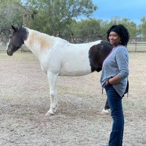

Victorious Beginnings Ranch
A Safe Haven for the Trafficked and Vulnerable
Austin, Texas, USA
Nichole Henderson
Anti-Sex Trafficking Advocate
Since founding Victorious Beginnings in 2012, I have been blessed to provide trauma-informed, faith-based behavioral and mental health services for children, individuals, families, and couples from all backgrounds and life experiences.
I am spirit-led, allowing God to facilitate their healing process through me, with unconditional acceptance. About five years ago, a revelation came to me through a dream that my path was to work with women who are survivors of sex trafficking, and that it would be in Austin.
I have been working toward this not knowing quite how it would come together and have since relocated to Austin from Nevada.
As I seek support to fulfill my calling, I am starting a new branch of Victorious Beginnings, a safe haven called Victorious Beginnings Ranch. My vision will transform culture and build community through civics, government, outreach, mental health services, and advocacy.

About THE VICTORIOUS BEGINNINGS RANCH
Helping women never doubt that they are Valuable & Powerful
Victorious Beginnings Ranch will succor women in breaking the chains of sexual soul ties via trauma-informed and equestrian therapy and holistic health and wellness via education and training by teaching and mentoring survivors.
Once survivors complete the program, they will have the opportunity to remain connected in our community and pay it forward via alumni status within program certifications and endorsed programs, colleges, and self-defense programs. f-defense programs.
A University of Texas study conducted in 2016 estimated that 79,000 Texans under the age of 25 had been trafficked for sex at some point in their lives. After their first experience of exploitation, survivors of child sex trafficking spent about 35% of their lives in circumstances of exploitation.
Among at-risk participants, 25% of people from the LGBTQ community and 18% of heterosexual females were survivors of sex trafficking. Participants’ economic instability and lack of healthy, trusted relationships in their lives created ideal conditions for exploitation through force, fraud, or coercion. The full study is accessible online at: http://sites.utexas.edu/ idvsa/files/2019/03/CSTT-HT-Final-Report-3.26.19.pdf
“My calling has always been grounded in servant leadership.”
I began volunteering in faith-based services, with an internship at a church. I am a Licensed Marriage and Family Therapist. I am pursuing my Ph.D. in Education and Organizational Leadership, I hold a Master of Science Degree in Counseling/ Marriage, Family and Child Therapy, and a Bachelor’s Degree in Business Management.
I was introduced to the therapeutic benefits of horse equine therapy and have used this modality as a way of creating a comforting space for deep healing from trauma. Horses are intuitive and empathetic in nature, being in their presence can offer breakthroughs in a much shorter timeframe, unlike any traditional talk therapy practices. I am EGALA Certified and will continue to enhance learning experiences for myself and my team to help survivors from a holistic modality.
The Vision
My work with survivors is to share messages they can integrate through spiritual practices that are meaningful to their needs as they rebuild their sense of self-worth and identity through the healing journey.
“You are the hero of your own story.”
“You are important.”
“You are enough.”
My vision is to connect with human service organizations in Nevada and Texas that work with underserved populations and intersect with sexual and domestic violence. Influence and help provide justice to those without a voice in Las Vegas and Texas. We will offer strategic education and mental health programs in both communities.
The Pillars
Pillars of Victorious Beginnings Ranch include:
A Safe Haven
Creating a safe haven for survivors with access to trauma-informed and equine therapy, continuing education, and an alumni mentorship program.
A Community
Developing community support groups and educational workshops with a toolkit that includes regional resources and education for survivors, family members and supporters, and service providers. Topics include: How to approach survivors and survivor needs coordinate community resources create awareness around challenges and community needs.
A Support Network
Connecting a network of regional support through community partnerships for wrap-around care and to raise awareness of the growing sex trafficking epidemic.
We need your help.
All funds collected will be used to build capacity and secure a location for our ranch to provide a safe haven for survivors.
Help us raise money for Victorious Beginnings Ranch
ARE YOU PART OF THE SOLUTION?
We need your help.
We know the need is critical and resources are limited to short-term and temporary housing that do not provide the mental health support that survivors need as they begin their healing journey.
Funding will be applied directly to the following expenses:
- Ranch purchase or rental
- Housing for survivors
- Stable rental
- Website and Marketing Development
- Fundraising campaigns to build capacity and leverage resources with partners
- Administrative and Consultant fees
Want to make a difference?
Donate now and change a life
Contact nichole@victoriousbeginnings.org For More Information.